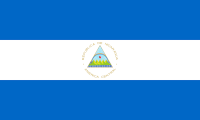

O imperialismo na Nicarágua foi marcado pelo domínio dos Estados Unidos sobre o país. Ocorreu por meio de invasões militares, ditaduras e controle econômico. O objetivo era proteger interesses de empresas americanas e impedir que outros países construíssem um canal.
A Nicarágua, famosa como a "terra de lagos e vulcões", tem no sudoeste do país o maior lago da América Central: o Lago Nicarágua, ou Cocibolca. Conhecido como "Mar Doce", possui mais de 8.200 km², ilhas vulcânicas e é um dos poucos lagos de água doce do mundo habitados por tubarões.
O milho é a base da alimentação e da cultura na Nicarágua, herança dos povos indígenas. Está presente em pratos salgados e em bebidas doces.

© 2026 MIGUEL PEIXOTO BORGES